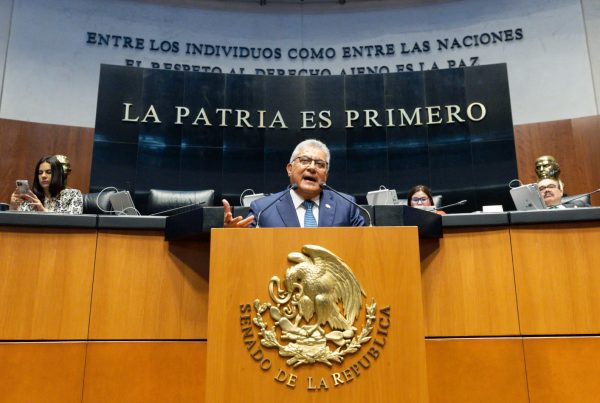

inicio
plazas
datos

Comunicado 27. Sí es posible desaparecer el sistema de cuentas individuales: Alfonso Cepeda Salas
Comunicado 26. Destaca el SNTE a nivel internacional por su lucha para mejorar la seguridad social
Comunicado 25. Senado de la República reconoce a los maestros por su contribución al desarrollo del país